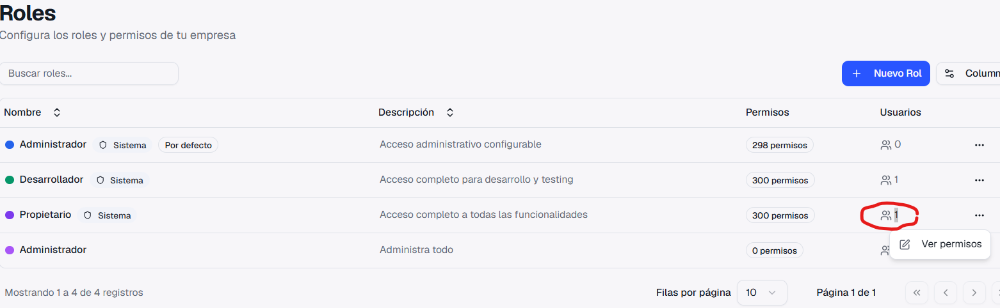
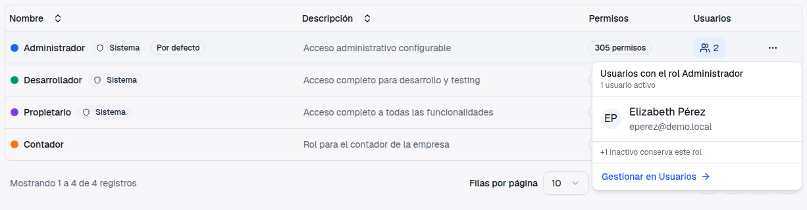
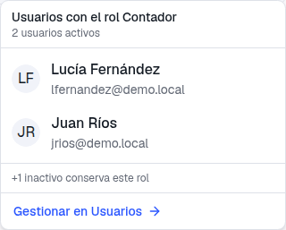
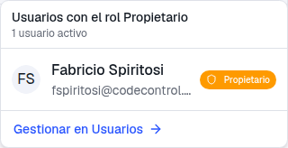
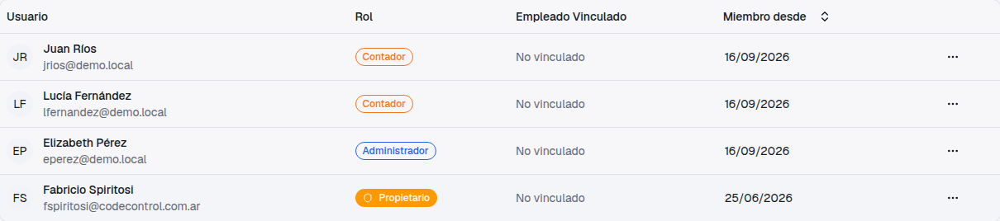
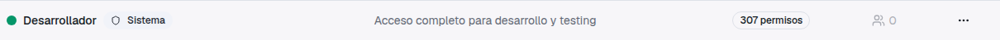
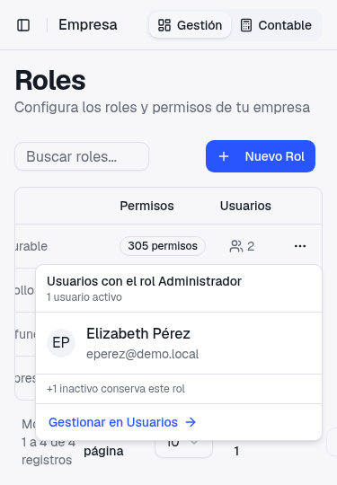

Guía de presentación — qué pedías, qué cambió y cómo usarlo
Estabas en Empresa → Roles y viste que la columna Usuarios te decía cuántas personas tenía cada rol, pero no quiénes eran:
El pedido tiene dos partes, y la segunda explica la primera: ver qué persona quedó en cada rol, y si alguien está en el equivocado, poder corregirlo sin tener que ir a buscarlo a ciegas.

La columna Usuarios era un contador fijo. Para saber quién tenía un rol había que ir a Empresa → Usuarios y recorrer la lista mirando la columna Rol, persona por persona.
El número se puede hacer clic. Se abre una ventanita con la lista de quiénes tienen ese rol, con nombre y email, y un link directo a Usuarios para cambiar el rol de quien haga falta.




Cuando desactivás a un usuario, deja de poder entrar al sistema pero conserva el rol que tenía. Por eso el número de la columna puede ser mayor que la cantidad de personas en la lista: la diferencia son los desactivados.
En ese caso, al pie de la lista aparece la línea "+1 inactivo conserva este rol" (o "+N inactivos conservan este rol"). No los mostramos con nombre porque tampoco aparecen en la pantalla de Usuarios; el aviso está para que el número te cierre.
Si un rol solo tiene desactivados, la lista dice "Ningún usuario activo tiene este rol" y abajo el aviso de inactivos.
Si el rol tiene 0 usuarios, el número queda en gris y no se puede hacer clic: no hay nada para mostrar. Es el mismo caso en que el rol se puede eliminar desde el menú (…).

El dueño de la empresa aparece siempre primero en la lista, con la misma etiqueta naranja Propietario que ya ves en la pantalla de Usuarios. Es un recordatorio de que a esa persona no se le puede cambiar el rol ni desactivarla.
Cualquier usuario que pueda ver la pantalla de Roles puede abrir la lista. Pero el link "Gestionar en Usuarios" solo aparece si esa persona además tiene permiso para ver la pantalla de Usuarios. Si un rol puede ver Roles pero no Usuarios, ve la lista completa sin el link, que igual no le serviría.
La lista funciona igual desde el teléfono. La ventana se acomoda dentro de la pantalla sin cortarse, y si un email es largo se recorta con puntos suspensivos en lugar de desbordar.
Se cierra tocando afuera, igual que en la computadora.

Mirando la captura que adjuntaste al ticket, hay dos detalles que no son parte de este cambio pero que ahora podés revisar vos misma con la lista nueva.
En tu pantalla de Roles aparece Administrador dos veces. El de arriba, con la etiqueta Sistema y 298 permisos, es el que viene con PMS. El de abajo, con la descripción "Administra todo" y 0 permisos, lo creaste vos en algún momento.
El problema es ese cero: cualquier persona asignada a ese rol no puede hacer nada en el sistema. Es exactamente el "le pifié" que motivó el ticket.
Cómo arreglarlo: hacé clic en el número de la columna Usuarios de ese rol para ver quién está. Desde "Gestionar en Usuarios", cambiale el rol a cada persona al Administrador del sistema (o al rol que corresponda). Cuando el rol vacío quede en 0, eliminalo desde el menú (…) para que no vuelva a confundir.
En tu captura el rol Propietario muestra 1, así que en tu empresa esto está bien. Lo anotamos por si lo ves en otra empresa: las empresas creadas en las primeras versiones de PMS pueden tener a su dueño sin rol asignado, y entonces el rol Propietario aparece con 0 aunque el propietario exista.
No afecta lo que esa persona puede hacer: el propietario tiene acceso total siempre, con o sin rol. Es solo el número el que engaña. Como al propietario no se le puede cambiar el rol desde Usuarios (a propósito, para que nadie lo deje sin acceso), no tenés que hacer nada: si lo ves, avisanos y lo corregimos nosotros; la corrección de fondo, para que no vuelva a pasar en empresas nuevas, va en otro ticket.